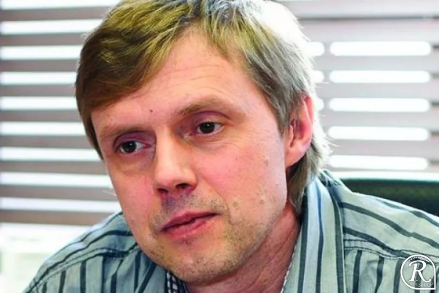

О Игоре Анатольевиче

„Хакер — это не гений, журналисты сделали хакеров гениями. Там всё тривиально.“
Игорь Данилов — известный российский программист, создатель антивирусной компании «Доктор Веб». Родился в 1964 году в Ленинграде. С 1990 года занялся антивирусной защитой: создал резидентный сторож Tadpole, сканер Tornado и систему Spider’s Web — прототип Dr.Web. В 1993 году его программа первой в мире обезвредила полиморфный вирус. В 2003 году основал компанию «Доктор Веб» и стал её техническим директором.
Российский программист, ключевой специалист по компьютерной безопасности, создатель легендарного антивируса Dr.Web. Основатель и бессменный технический директор IT-компании «Доктор Веб»